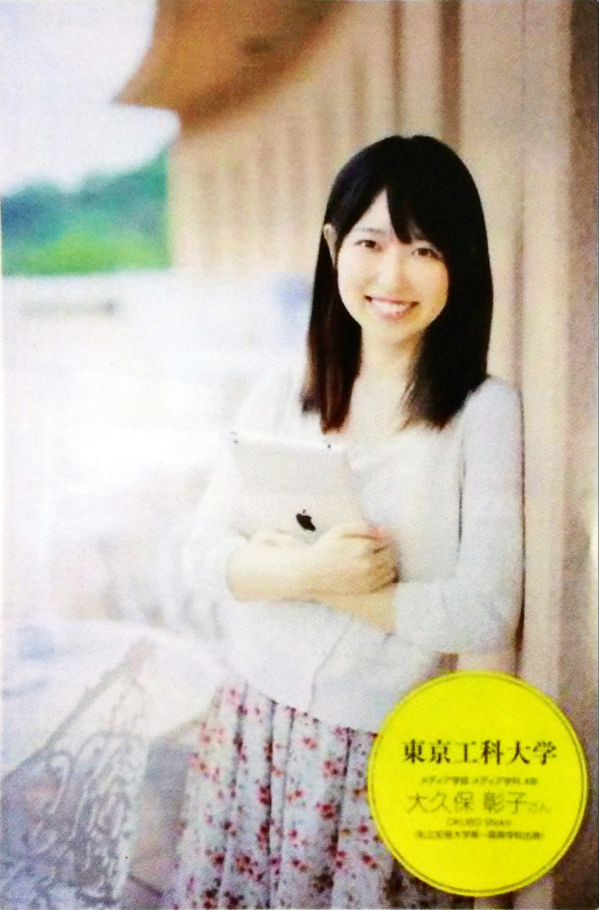
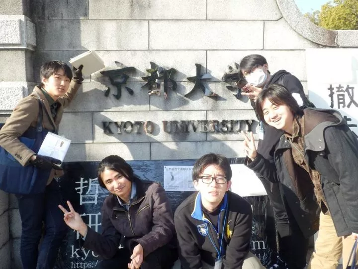
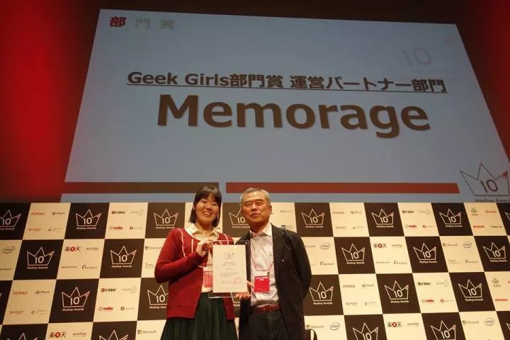
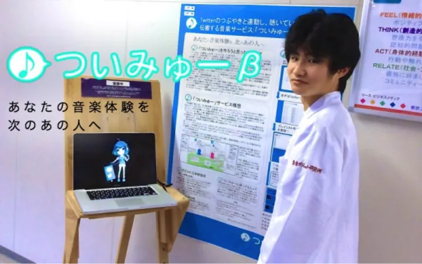
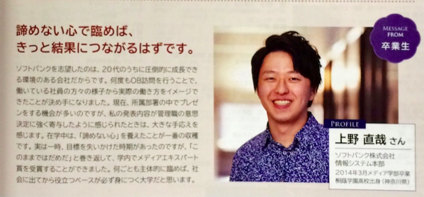
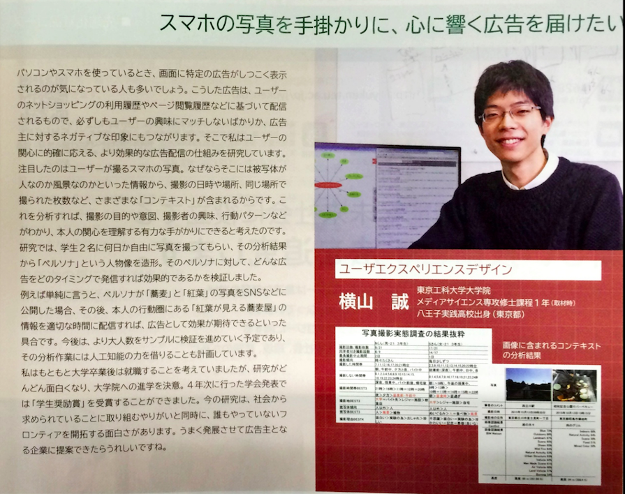
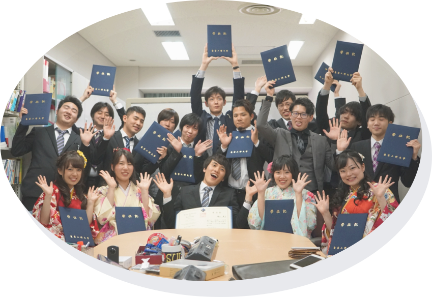
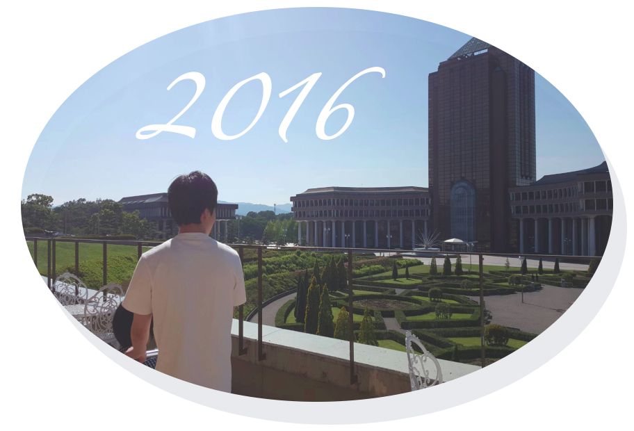
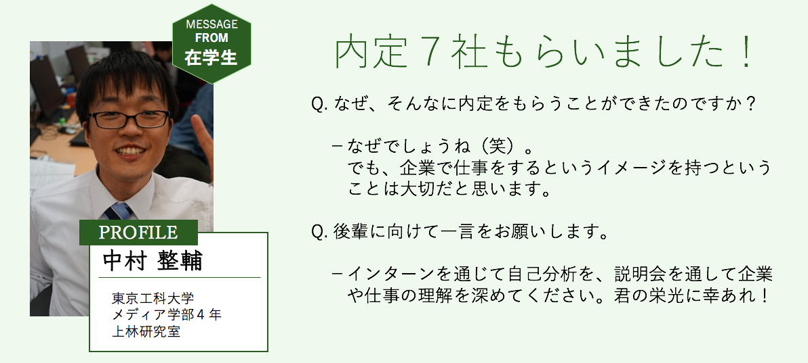

SXDの魅力とダントツの実績
SXDの魅力
ITを駆使して地域活性化を支援する
「文理融合型」プロジェクトに参加
企業や利用者との共同(共創)研究を基本として進めますので、研究に責任感とやりがいを感じながら社会で必要となる実践的な知識・スキルを身につけられます。そしてその経験と実践スキルは就活成功につながり、入社後も先頭を走ることができます。


社会的に評価される研究成果と先輩たちの活躍
毎年、情報処理学会等の発表で「学生奨励賞」を9年連続受賞は恐らく研究室では日本一。今年2016年の大会では、3名が学生奨励賞を獲得の快挙。
＊＊学部ブログを参照＊＊
様々な挑戦の場
また、積極的に自分の力を試すコンテストに応募します。ニコニコβ会議、マッシュアップコンテスト、八王子市長提案会など、社会的に認められるレベルの成果に挑戦するなど先輩の卒研生の活躍も目に見張るものがあります。今年卒業した先輩達は、マッシュアップコンテストに5名が応募して、女子学生部門で、GeekGirls賞を受賞。


ニコニコβ学会では、院生がポスター発表を行なうなど社会的にも評価される活躍をしています。
某有名パンフレットデビュー
2015年度,2016年度,2017年度の某有名パンフレットには、卒研生が大学を代表する学生、学部を代表する学生として連続して取り上げられています。


横山先輩は現在卒業研究室に在籍しています。サインが欲しい方は遠慮なくお申し付けください。（本人無許可）
ダントツの実績一覧

2015年度
卒研ⅡS評価者数 ダントツNo.1
軽部賞受賞者数 ダントツNo.1
学会発表 15／17達成
アイドルデビュー 1名
IPSJ学生奨励賞 9年連続 3名
Mashup 応募5名 決勝進出 1名
小学校総合学習貢献 計4回実施
2016年度
1月中旬に 内定第１号。
3月1日の情報解禁日前までには、5名が内々定獲得しました。（内々定率30%）就活の外部環が好転してきている影響もあり、近来にない速いペース。それこそ爆速の内定報告ラッシュでした。４月末の時点では、内々定率は88%を超える結果になりました。複数の企業から内々定を獲得した学生も多数います。

